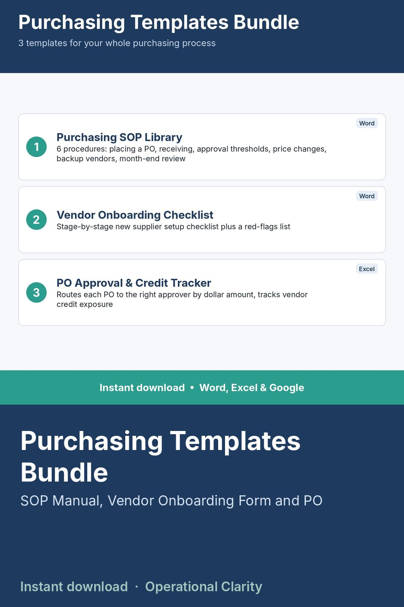

Purchasing Templates Bundle

THE COMPLETE PURCHASING MANAGEMENT TOOLKIT - 3 TEMPLATES, ONE PRICE.
This bundle contains all 3 of our purchasing management templates together, at a lower combined price than buying them separately.
WHAT'S INCLUDED
1. Purchasing SOP Library - 6 full standard operating procedures covering placing a PO, receiving against a PO, approval thresholds, price change handling, backup vendor selection, and month-end review
2. Vendor Onboarding Checklist - stage-by-stage new supplier setup checklist plus a red-flags list
3. PO Approval and Credit Tracking Sheet - auto-routes POs to the right approver by dollar amount and tracks vendor credit limit exposure
WHAT'S INCLUDED PER TEMPLATE
- Word file (.docx) or Excel file (.xlsx) as applicable - no macros
- Google Docs / Google Sheets version
- Sample data or bracketed placeholders included
WHO THIS IS FOR
Small business owners and operations/finance teams who want their whole purchasing process - procedures, vendor vetting, and spend approval - covered at once.
INSTANT DOWNLOAD - no physical item will be shipped. Because this is a digital product, all sales are final.